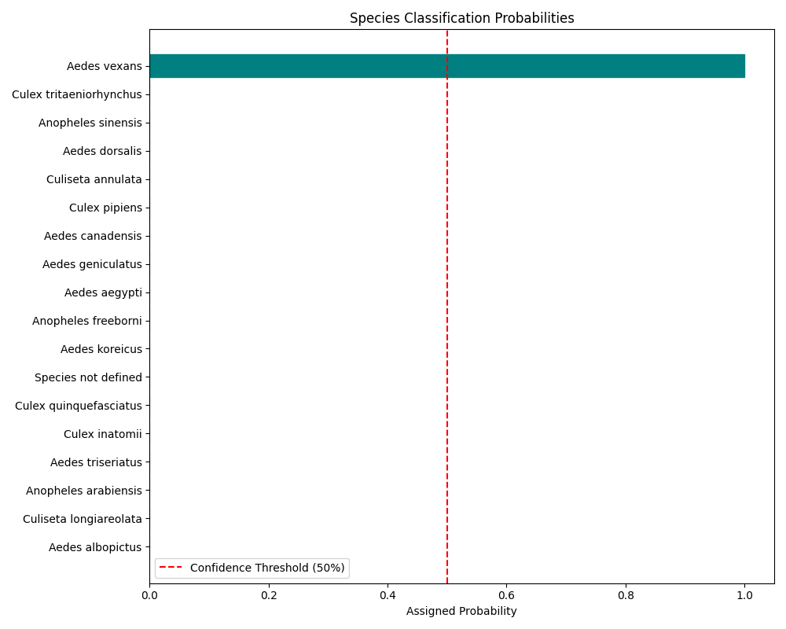

Note
Click here to download the full example code
Classifying Mosquito Species
This tutorial shows how to use the MosquitoClassifier from the CulicidaeLab
library to perform species classification. We will cover:
- Loading the classification model
- Preparing an image
- Running the model to get classification results
- Visualizing and interpreting the results
- Evaluating a classification prediction
Install the culicidaelab library if not already installed
!pip install -q culicidaelab
1. Initialization
We start by initializing the MosquitoClassifier. The settings object will handle
the configuration, and load_model=True will ensure the model is downloaded and
loaded into memory right away.
import cv2
import re
import matplotlib.pyplot as plt
from pathlib import Path
from culicidaelab import MosquitoClassifier, get_settings
# Get settings instance
settings = get_settings()
# Instantiate the classifier and load the model
print("Initializing MosquitoClassifier and loading model...")
classifier = MosquitoClassifier(settings, load_model=True)
print("Model loaded successfully.")
# You can inspect the model's configuration directly from the settings object.
classifier_conf = settings.get_config("predictors.classifier")
print(f"\nLoaded model architecture: {classifier_conf.model_arch}")
Out:
Initializing MosquitoClassifier and loading model...
Model weights for 'classifier' not found. Attempting to download...
Ensuring destination directory exists: /home/runner/.local/share/culicidaelab/models/weights/classification
Downloaded weights to: /home/runner/.local/share/culicidaelab/models/weights/classification/culico-net-cls-v1-17.pkl
/opt/hostedtoolcache/Python/3.11.13/x64/lib/python3.11/site-packages/fastai/learner.py:455: UserWarning: load_learner` uses Python's insecure pickle module, which can execute malicious arbitrary code when loading. Only load files you trust.
If you only need to load model weights and optimizer state, use the safe `Learner.load` instead.
warn("load_learner` uses Python's insecure pickle module, which can execute malicious arbitrary code when loading. Only load files you trust.\nIf you only need to load model weights and optimizer state, use the safe `Learner.load` instead.")
Model loaded successfully.
Loaded model architecture: tiny_vit_21m_224.in1k
Inspecting Model Classes
It's often useful to see which species the model was trained to recognize.
The recommended way is to use the species_config.
species_map = settings.species_config.species_map
print("--- Model Classes (from settings) ---")
print(species_map)
Out:
--- Model Classes (from settings) ---
{0: 'Aedes aegypti', 1: 'Aedes albopictus', 2: 'Aedes canadensis', 3: 'Aedes dorsalis', 4: 'Aedes geniculatus', 5: 'Aedes koreicus', 6: 'Aedes triseriatus', 7: 'Aedes vexans', 8: 'Anopheles arabiensis', 9: 'Anopheles freeborni', 10: 'Anopheles sinensis', 11: 'Species not defined', 12: 'Culex inatomii', 13: 'Culex pipiens', 14: 'Culex quinquefasciatus', 15: 'Culex tritaeniorhynchus', 16: 'Culiseta annulata', 17: 'Culiseta longiareolata'}
2. Preparing an Image for Classification
Now, let's load a test image. The classifier expects an image in RGB format.
Load a test image
image_path = Path("test_imgs") / "640px-Aedes_aegypti.jpg"
image = cv2.imread(str(image_path))
if image is None:
raise ValueError(f"Could not load image from {image_path}")
# Convert from BGR (OpenCV's default) to RGB
image_rgb = cv2.cvtColor(image, cv2.COLOR_BGR2RGB)
# Display the input image
plt.figure(figsize=(8, 8))
plt.imshow(image_rgb)
plt.axis("off")
plt.title("Input Image")
plt.show()

3. Running Classification and Interpreting Results
The predict method returns a list of tuples, where each tuple contains
a (species_name, confidence_score), sorted by confidence.
Run classification
predictions = classifier.predict(image_rgb)
# Let's print the top 5 predictions
print("--- Top 5 Predictions ---")
for species, prob in predictions[:5]:
print(f"{species}: {prob:.2%}")
Out:
█
|----------------------------------------| 0.00% [0/1 00:00<?]
|████████████████████████████████████████| 100.00% [1/1 00:00<00:00]
--- Top 5 Predictions ---
Species not defined: 100.00%
Aedes geniculatus: 0.00%
Aedes canadensis: 0.00%
Culiseta longiareolata: 0.00%
Aedes albopictus: 0.00%
4. Visualizing Classification Results
CulicidaeLab provides two easy ways to visualize the results:
1. A bar plot showing the confidence for all classes.
2. An annotated image with the top predictions overlaid.
Get all species names and their predicted probabilities
species_names = [p[0] for p in predictions]
probabilities = [p[1] for p in predictions]
conf_threshold = settings.get_config("predictors.classifier.confidence")
# Create a bar plot of the probabilities
plt.figure(figsize=(12, 7))
bars = plt.barh(species_names[::-1], probabilities[::-1]) # Reverse to show highest on top
# Color bars based on confidence
for i, prob in enumerate(probabilities[::-1]):
bars[i].set_color("teal" if prob >= conf_threshold else "lightgray")
plt.axvline(x=conf_threshold, color="r", linestyle="--", label=f"Confidence Threshold ({conf_threshold:.0%})")
plt.xlabel("Probability")
plt.title("Species Classification Probabilities")
plt.legend()
plt.tight_layout()
plt.show()

The visualize method overlays the top predictions directly onto the image.
annotated_image = classifier.visualize(image_rgb, predictions)
# Display the annotated image
plt.figure(figsize=(10, 10))
plt.imshow(annotated_image)
plt.axis("off")
plt.title("Classification Result with Overlay")
plt.show()

5. Evaluating a Prediction
To measure performance, you can evaluate a prediction against a known ground truth label. This returns key metrics like accuracy and top-5 correctness.
The true label for our test image is 'aedes_aegypti'
ground_truth_label = "aedes_aegypti"
# You can evaluate from a pre-computed prediction...
print(f"--- Evaluating prediction against ground truth '{ground_truth_label}' ---")
metrics_from_prediction = classifier.evaluate(ground_truth_label, prediction=predictions)
print(f"Metrics from prediction: {metrics_from_prediction}")
# ... or directly from the input image.
metrics_from_image = classifier.evaluate(ground_truth_label, input_data=image_rgb)
print(f"Metrics from image: {metrics_from_image}")
Out:
--- Evaluating prediction against ground truth 'aedes_aegypti' ---
Metrics from prediction: {'accuracy': 0.0, 'confidence': 0.9999973773956299, 'top_1_correct': 0.0, 'top_5_correct': 0.0}
█
|----------------------------------------| 0.00% [0/1 00:00<?]
|████████████████████████████████████████| 100.00% [1/1 00:00<00:00]
Metrics from image: {'accuracy': 0.0, 'confidence': 0.9999973773956299, 'top_1_correct': 0.0, 'top_5_correct': 0.0}
6. Batch Classification
Just like the detector, the classifier can process a batch of images for improved performance.
image_dir = Path("test_imgs")
pattern = re.compile(r"\.(jpg|jpeg|png)$", re.IGNORECASE)
image_paths = [path for path in image_dir.iterdir() if path.is_file() and pattern.search(str(path))]
try:
batch = [cv2.cvtColor(cv2.imread(str(path)), cv2.COLOR_BGR2RGB) for path in image_paths]
print(f"\n--- Classifying a batch of {len(batch)} images ---")
except Exception as e:
print(f"An error occurred while reading images: {e}")
batch = []
classifier_batch_result = classifier.predict_batch(batch, show_progress=True)
print("\n--- Batch Classification Results ---")
for i, single_image_preds in enumerate(classifier_batch_result):
top_pred_species = single_image_preds[0][0]
top_pred_conf = single_image_preds[0][1]
print(
f" - Image '{image_paths[i].name}': ",
f"Top prediction is '{top_pred_species}' with {top_pred_conf:.2%} confidence.",
)
Out:
--- Classifying a batch of 3 images ---
█
|----------------------------------------| 0.00% [0/1 00:00<?]
|████████████████████████████████████████| 100.00% [1/1 00:02<00:00]
█
|----------------------------------------| 0.00% [0/1 00:00<?]
|████████████████████████████████████████| 100.00% [1/1 00:00<00:00]
█
|----------------------------------------| 0.00% [0/1 00:00<?]
|████████████████████████████████████████| 100.00% [1/1 00:00<00:00]
--- Batch Classification Results ---
- Image 'aedes-aegipy.png': Top prediction is 'Species not defined' with 100.00% confidence.
- Image '9bd8bd325307035016959cb82376e09b.jpg': Top prediction is 'Species not defined' with 99.53% confidence.
- Image '640px-Aedes_aegypti.jpg': Top prediction is 'Species not defined' with 100.00% confidence.
Total running time of the script: ( 0 minutes 5.972 seconds)
Download Python source code: tutorial_part_4_mosquito_classification.py
Download Jupyter notebook: tutorial_part_4_mosquito_classification.ipynb